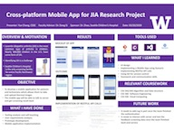
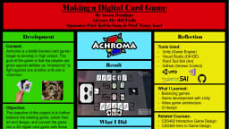
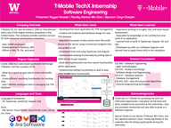
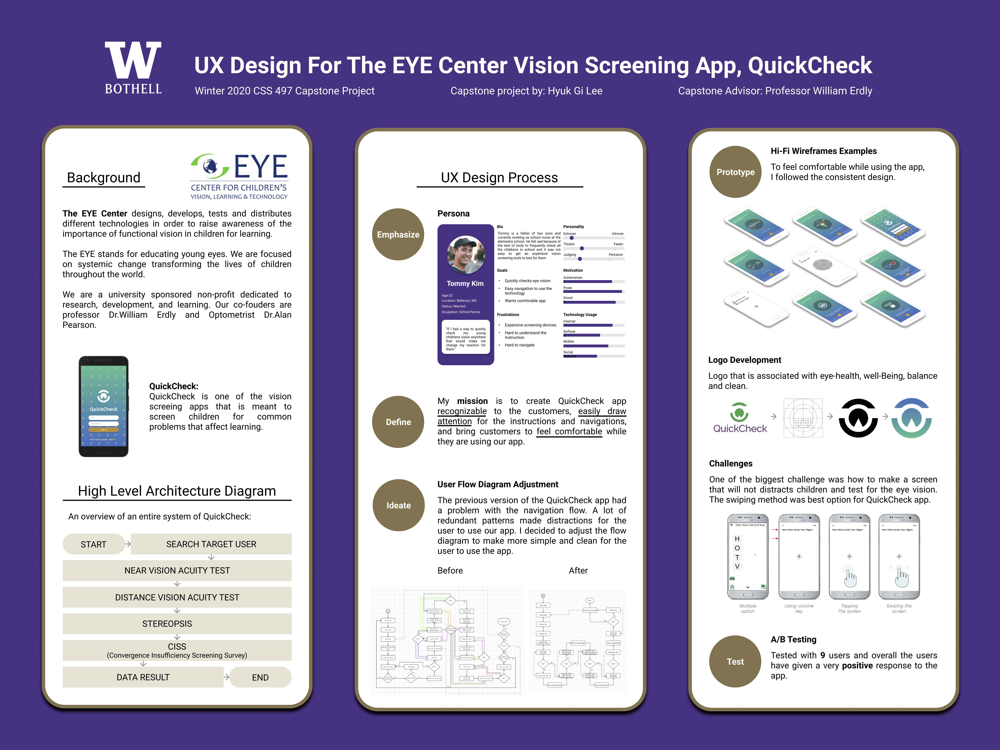
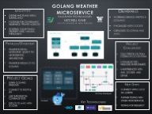
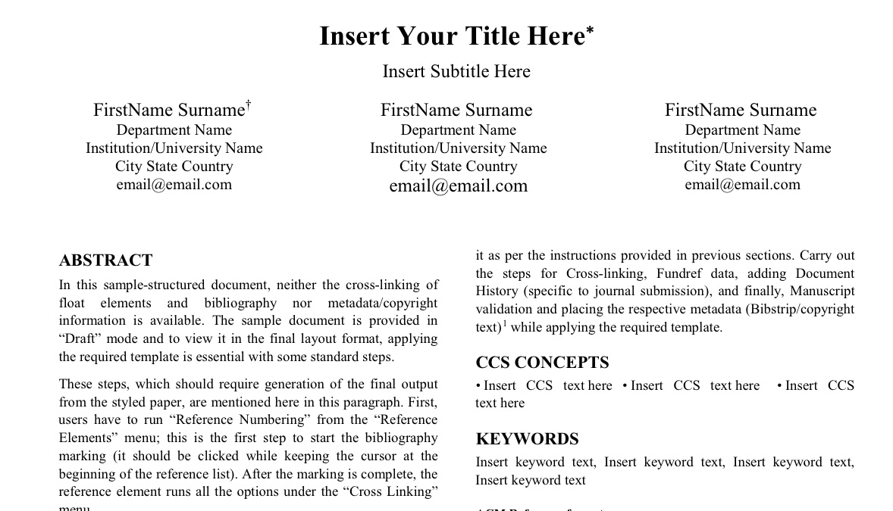
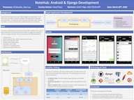
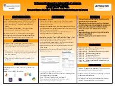
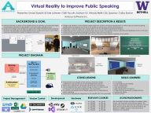
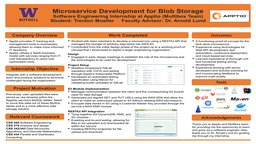

Computer Science and Software Engineering Capstone Presentations
20 March 2020
Click on the thumbnails, to view posters in full resolution.
Join the Zoom Room to attend the presentations
You can
download a UWB STEM
virtual background or
the flipped
version depending on how your video is configured.
{kind=link}
{kind=link}
Sessions Overview
Lobby Zoom: Any last minute announcements will be posted in the Lobby Zoom. You can also come in here to text or video chat with other attendees. Meeting ID: 774 803 693
Zoom Etiquette: Mute your microphone. Turn on your video if possible, so you are providing an engaged audience rather than a blank page to the presenter. If you have a question, use "Raise Hand" under Participants in Zoom controls. At the end of the presentation, use "Clap" under Reactions to show your appreciation of the presentation. Treat being a Zoom audience similar to being an audience in a regular presentation, excessive fidgeting or moving around can be distracting to the presenter.
Schedule is in Progress -- Time Slots may and will change
| Room-1 | Room-2 | Room-3 | Room-4 | |
| Room-1 Zoom Meeting ID: 576 664 887 |
Room-2 Zoom Meeting ID: 367 431 032 |
Room-3 Zoom Meeting ID: TBD |
Room-4 Zoom Meeting ID: TBD |
|
| 12:30 | Brandon Kinard "Identification and Intervention to Prevent the Propagation of Misinformation on Online Platforms"  Advisor: Laurie Anderson |
Emily Krasser "Cloud Services Internship"  Advisor: Kelvin Sung |
Zachary Brader "AuNemoLib C++"  Advisor: Wooyoung Kim |
Kaib Cropley "TableSafe Internship"  Advisor: Marc J Dupuis |
| 12:45 | Shelby Mirziteh "Front End Development with React.js"  Advisor: Laurie Anderson |
Samuel Krogh "Self-aware Module Satellite Computer Cluster"  Advisor: Kelvin Sung |
Yue Chang "Cross-platform Mobile App for JIA Research Project"  Advisor: Dong Si |
Emir Dzaferovic "Automated Mobile App and Web Testing"  Advisor: Munehiro Fukuda |
| 1:00 | Ngoc Duy Nguyen "TASTEFOOD - A Food Truck Finder App"  Advisor: Nancy Kool |
Joel Maxwell "Fujifilm SonoSite Internship"  Advisor: Kelvin Sung |
Aaron Handjojo "Making a Digital Card Game"  Advisor: William Erdly |
Chyanne Haugen "Internship at SAP Concur"  Advisor: Munehiro Fukuda |
| 1:15 | Ethan Silvas "Full-stack Cloud-based Web Applications at Nintendo"  Advisor: Nancy Kool |
Rayyan Hussain "TBD"  Advisor: Min Chen |
Gi Lee "QuickCheck"  Advisor: William Erdly |
Joshua Landron "MASS C++ Update and Benchmarking"  Advisor: Munehiro Fukuda |
| 1:30 | Mitchell Kane "GoLang Weather Microservice"  Advisor: Erika Parsons |
Jakob Delzer "Building a web application to remotely access electrical engineering labs" Advisor: Min Chen |
Sneha Ravichandran "Clapped Internship: Full Stack Development using Django"  Advisor: William Erdly |
Tyler Malan "Internship at Smartsheet"  Advisor: Munehiro Fukuda |
| 1:45 | Allan Luu "NoteHub"  Advisor: Yusuf Pisan |
Chelsea IP "Automation Website UX Redesign, Backend Code Migration & User Research"  Advisor: Min Chen |
Juan Arias "Mobile App Development for Smart Tours"  Advisor: Mark Kochanski |
Brian Tang "Core Development at Airship Industries, Inc"  Advisor: Munehiro Fukuda |
| 2:00 | JD Mauthe "Notehub: Django Backend Development"  Advisor: Yusuf Pisan |
Khaoula Bahloul "MedIntelleBase Xamarin-Based App Development"  Advisor: Min Chen |
Patrick Dodd "Runalytical - Using React, D3, & Firestore to visualize fitness data"  Advisor: Mark Kochanski |
Kevin Wang "Privacy-Preserving Mobile Video Sharing using Fully Homomorphic Encryption"  Advisor: Brent Lagesse |
| 2:15 | Pratit Vithalani "Software Internship at Amazon"  Advisor: Yusuf Pisan |
Abbad Vakil "Automating Rest API Testing at Visa"  Advisor: Min Chen |
Omar Iqbal "FlowBy Android Application"  Advisor: Mark Kochanski |
Brian Hou "Nike Global Technology Internship"  Advisor: Arnie Lund |
| 2:30 | Umair Qureshi "Virtual Presenter Pro"  Advisor: Arkady Retik |
Ibrahim Mohiuddin "TBD"  Advisor: Min Chen |
Pranav Sakthivel "Pathway Algorithms at The SwiftPath Program"  Advisor: Mark Kochanski |
Trenton Mueller "Software Development on Distributed Backend Services"  Advisor: Arnold Lund |
| 2:45 | Kyle Lotterer "Virtual Presenter Pro"  Advisor: Arkady Retik |
Manvir Singh Intern at CloudMoyo  Advisor: Mark Kochanski |
||
| 3:00 | End of Presentations - Meet in Lobby | End of Presentations - Meet in Lobby | End of Presentations - Meet in Lobby | End of Presentations - Meet in Lobby |
{kind=link}
{kind=link}
{kind=link}
{kind=link}
{kind=link}
{kind=link}
{kind=link}
{kind=link}
{kind=link}
{kind=link}
{kind=link}
Presenters
Juan Arias
Mobile App Development for Smart Tours
Faculty Advisor: Mark Kochanski
Zachary Brader
AuNemoLib C++
Industry Sponsor: University of Washington Bothell
Faculty Advisor: Wooyoung Kim
Abstract: Network Motifs are statistically unique subgraph patterns that exist in networks. Identifying them is an important task but can be also quite time consuming and expensive. One of the solutions, the Network Motif Library, also known as “NemoLib”, significantly reduces the cost and time necessary to identify these subgraph patterns. NemoLib was originally written using Java, and later C++. The C++ version lacked multiple features that the current version of NemoLib Java and had a significantly slower runtime compared to the Java version. In order to improve upon the current C++ version, the application was extended to include the additional functionality that it lacked, its data was verified for correctness, and various methodologies were tested and implemented to improve it. By reducing the overhead during execution and fixing some bugs that caused the C++ version to incorrectly parse information, the runtime was drastically reduced. With the newly implemented changes, the C++ version is now a more competitive option on the market.
Khaoula Bahloul
MedIntelleBase Xamarin-Based App Development
Faculty Advisor: Min Chen
Yue Chang
Cross-platform Mobile App for JIA Research Project
Industry Sponsor: Seattle Children s Hospital
Sponsor: Yongdong Zhao
Faculty Advisor: Dong Si
Kaib Cropley
TableSafe Internship
Industry Sponsor: TableSafe
Sponsor: Taylor Dabb
Faculty Advisor: Marc J Dupuis
Jakob Delzer
Building a web application to remotely access electrical engineering labs
Student Defined - Group Project
Sponsor: Arnold Berger
Faculty Advisor: Min Chen
Abstract: The goal of the project is to create a website that will allow UW students to reserve and remotely access lab machines. The lab machines are Windows computers that are connected to an ELVIS device that the lab will be performed with. UW Bothell’s Electric Engineering students will be able to work on labs from their homes. The design of the project consists of multiple parts, a website, a database, and remote desktop setup for the machines. For the website, I have used some open-source appointment scheduling skeleton to expand upon for this use case. I have changed the access to the website to only allow UW netid accounts to access the appointment creation. Appointments are 2 hour long sessions that can be reserved by any UW student or faculty. The appointment can be accessed on the website during the reserved time. A Remote Desktop Connection file will be downloaded that will connect to the reserved computer. A database on one of the lab machines is running a MySQL 5.6 server. The database stores all of the appointment, user, lab, and computer information. The website is hosted by UW’s vergil web host and is then able to connect safely to the lab machine’s server. The rest of the project is setting up the computers to be able to manage permissions for the remote desktop connections. This is done with PowerShell scripts that are run through the task scheduler at different times of the day. The scripts access the database and if that machine has an appointment, the NetID will be added to the remote desktop permissions. Every 2 hours, if there is an upcoming appointment warning will be put out and then users will be disconnected and removed from the permissions, so the next user will be able to access the lab. Documentation has also been created to help future students improve or change the current system.
Patrick Dodd
Runalytical - Using React, D3, & Firestore to visualize fitness data
Student Defined - Individual Project
Sponsor: Jack Lightfoot and Nicholas Runte
Faculty Advisor: Mark Kochanski
Emir Dzaferovic
Automated Mobile App and Web Testing
Industry Sponsor: Sofy.AI
Sponsor: Syed Hamid
Faculty Advisor: Munehiro Fukuda
Aaron Handjojo
Making a Digital Card Game
Student Defined - Individual Project
Sponsor: Kelvin Sung and Nancy Kool
Faculty Advisor: William Erdly
Brian Hou
Nike Global Technology Internship
Industry Sponsor: Nike
Faculty Advisor: Arnie Lund
Abstract: This past summer, I completed a Nike Global Technology Internship down in Beaverton, Oregon at the Nike World Headquarters. I was an intern on the Personalization Team within the Nike Global Technology Department. Our Personalization team's general goal was to serve product recommendations through any of the Nike platforms such as the Nike Running Club App, Nike Training Club App, Nike.com, etc. using Machine Learning models. In addition to serving recommendations for our end users, our Personalization team also created and provided some of the tools supporting the end-to-end development and deployment of machine learning models for Data Scientists, so that they were able to own the lifecycle of their models with no need for handing it over to other teams. The software engineering team that I was a part of was involved in the Agile Software Development process with one month long Sprints and also heavily leaned on the successful Consumer Direct Offense business model for impacting consumers.
Chyanne Haugen
Internship at SAP Concur
Industry Sponsor: SAP Concur
Sponsor: Yovka Pencheva
Faculty Advisor: Munehiro Fukuda
Rayyan Hussain
TBD
Faculty Advisor: Min Chen
Omar Iqbal
FlowBy Android Application
Student Defined - Individual Project
Faculty Advisor: Mark Kochanski
Chelsea IP
Automation Website UX Redesign, Backend Code Migration & User Research
Industry Sponsor: MedIntellibase Intelligence Solutions/ The Next Phase Inc.
Sponsor: Alice Lee and Victoria Hunsicker Sanko
Faculty Advisor: Min Chen
Mitchell Kane
GoLang Weather Microservice
Industry Sponsor: EagleView Technologies
Faculty Advisor: Erika Parsons
Brandon Kinard
Identification and Intervention to Prevent the Propagation of Misinformation on Online Platforms
Applied Computing, Minor Mathematics
Faculty Advisor: Laurie Anderson
Emily Krasser
Cloud Services Internship
Industry Sponsor: Unity Technologies
Faculty Advisor: Kelvin Sung
Samuel Krogh
Self-aware Module Satellite Computer Cluster
Faculty Advisor: Kelvin Sung
Joshua Landron
MASS C++ Update and Benchmarking
UWB CSS Faculty Research
Faculty Advisor: Munehiro Fukuda
Gi Lee
QuickCheck
UWB CSS Faculty Research
Faculty Advisor: William Erdly
Abstract: This capstone project is from the EYE center at the University of Washington Bothell research lab. The project is focused on the vision screening tool for the children in order to raise awareness of the importance of functional vision in children for learning. This capstone brought me to experience an how to iterate current project through user experience design process. I competed successfully on the brand making, layouts for the mobile app through lo-fi and hi-fi prototypes.
Kyle Lotterer
Virtual Presenter Pro
Student Defined - Group Project
Sponsor: Colby Easton
Faculty Advisor: Arkady Retik
Allan Luu
NoteHub
Student Defined - Group Project
Sponsor: Aden Shukuroff and Aaron Vega
Faculty Advisor: Yusuf Pisan
JD Mauthe
Notehub: Django Backend Development
Student Defined - Group Project
Sponsor: Aaron Vega and Aden Shukuroff
Faculty Advisor: Yusuf Pisan
Joel Maxwell
Fujifilm SonoSite Internship
Industry Sponsor: Fujifilm SonoSite
Faculty Advisor: Kelvin Sung
Tyler Malan
Internship at Smartsheet
Industry Sponsor: Smartsheet
Faculty Advisor: Munehiro Fukuda
Shelby Mirziteh
Front End Development with React.js
Industry Sponsor: Computing Kids
Sponsor: Ritu Bahl
Faculty Advisor: Laurie Anderson
Ibrahim Mohiuddin
TBD
Industry Sponsor: Mu Sigma
Faculty Advisor: Min Chen
Trenton Mueller
Software Development on Distributed Backend Services
Industry Sponsor: Apptio
Faculty Advisor: Arnold Lund
Ngoc Duy Nguyen
TASTEFOOD - A Food Truck Finder App
Student Defined - Individual Project
Sponsor: Alex North
Faculty Advisor: Nancy Kool
Prathyusha Pillari
TBD
Industry Sponsor: Never Again Tech
Faculty Advisor: Min Chen
Poster: view
{kind=link}
Umair Qureshi
Virtual Presenter Pro
Industry Sponsor: Anxious Software Inc
Sponsor: Colby Easton
Faculty Advisor: Arkady Retik
Abstract: The main purpose of this capstone project was to create a virtual reality application to help individuals overcome their fear of public speaking. Users would be able to practice their presentations in different environments with a populated and attentive audience, and thereafter receive informative feedback statistics regarding filler words, eye contact and more based on their performance. This project was a collaboration with two other individuals, each working on a different aspect of the project such as hardware integration, creating feedback scripts and audience population. I was tasked with 3D modeling of environments and their usability testing, creating audio and visual menus including their interface and associated scripts in C#, creating a topic bank and code to randomly select topics and integration testing. The first step in building this application was to design and map out the features required for the beta, and assigning tasks to team members. Research was done regarding each feature in order to find the most efficient and accurate way of implementing it. The next step was to code that technique and perform integration testing with the Unity cloud build. Also involved with this project was participating in an agile work environment, including monitoring a Trello board, giving weekly progress updates and participating in meetings. The results attained were satisfactory as the beta we intended was successfully built and tested, even if they were slower than desired.
Sneha Ravichandran
Clapped Internship: Full Stack Development using Django
Industry Sponsor: Clapped
Sponsor: Edwin Melville Green
Faculty Advisor: William Erdly
Abstract: During my internship with Clapped I worked on creating a web application product for their client Mentorite. The idea was to make a website that allows people to better learn new things and improve existing skills through mentorship. This application would improve job satisfaction overall and allow for employees to more easily work in their preferred roles or help them work towards this in an achievable way. We were making this product because the client reached out and the idea seemed really useful and realistic in terms of possibility for us to implement. Though the project was ditched in the end by Mentorite, we still continued with production and Clapped created a great environment for me to learn how to go from start to finish in learning how to develop a product. There is currently no product like this out on the market, so creating this was innovative and useful. This would allow for developers like the ones in big tech companies such as Microsoft can develop their own worth and be satisfied with their roles and need for a variety of work. Allowing for people to better themselves within a company creates a good impression of the company and allows these team members to become individually more skilled and valuable.
Pranav Sakthivel
Pathway Algorithms at The SwiftPath Program
Industry Sponsor: The SwiftPath Program
Sponsor: Craig McAllister and Stacey Castleberry
Faculty Advisor: Mark Kochanski
Alieu Sanneh
TBD
Industry Sponsor: Avanade
Faculty Advisor: Min Chen
Poster: view
{kind=link}
Manvir Singh
Intern at CloudMoyo
Industry Sponsor: CloudMoyo
Faculty Advisor: Mark Kochanski
Ethan Silvas
Full-stack Cloud-based Web Applications at Nintendo
Industry Sponsor: Nintendo of America
Faculty Advisor: Nancy Kool
Brian Tang
Core Development at Airship Industries, Inc
Faculty Advisor: Munehiro Fukuda
Abbad Vakil
Automating Rest API Testing at Visa
Industry Sponsor: Visa
Faculty Advisor: Min Chen
Pratit Vithalani
Software Internship at Amazon
Industry Sponsor: Amazon
Sponsor: Hannes Scheidler
Faculty Advisor: Yusuf Pisan
Abstract:During the summer of 2019, I worked as a Software Development Engineer at Amazon. I worked on team COSMOS, where the main responsibility is to analyze and act on sellers who attempt to defraud Amazon. My project was to extend the main tool that my team owns, the COSMOS Dashboard, which will help our main clients: machine learning scientists. They utilize our tool to improve their machine learning models and get the results they want to stop bad sellers from abusing our system. The first part of my project involved displaying vital information to the Dashboard. Since the backend code was already working, all I had to do was add this to the frontend using JSP and CSS. The second part of the project was to interview our stakeholders and clients of the team’s internal tool. I conducted seven interviews with machine learning scientists who use our tool, gaining valuable feedback from them about how to better our service. I identified the problems, grouped the similar ones, and prioritized them before adding them to a backlog of Dashboard tickets. Out of these tickets, I was able to address the UI needs. In the third and final part of the project, I integrated the information I added in the first part with more information obtained from another team’s APIs. I extended the Java backend code to get this information from the APIs and displayed the information using JSP. After displaying this information, I used CSS, JSP, and a little bit of JavaScript on the web page to enhance the look. As a software engineer, I gathered requirements through client interviews, created a wireframe model for a web page, and acquired permission to use another team’s APIs after convincing them. At the end of my internship, I demonstrated my work to my team, stakeholders, clients, and director. The response was positive, as this addition to the tool will help give a holistic view on why an action on a seller was made.
Kevin Wang
Privacy-Preserving Mobile Video Sharing using Fully Homomorphic Encryption
UWB CSS Faculty Research
Faculty Advisor: Brent Lagesse